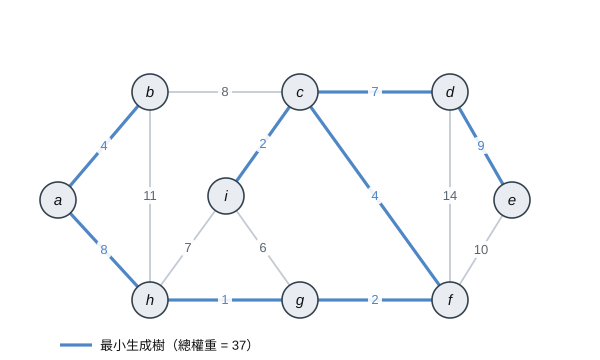
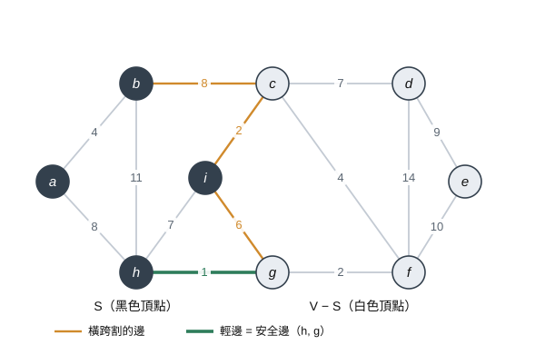
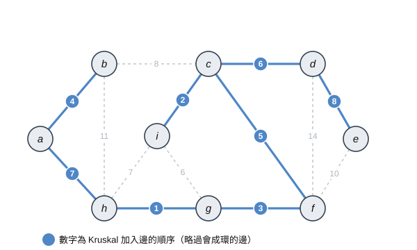
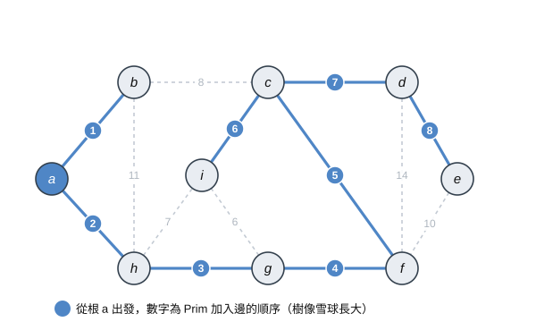

第一節 最小生成樹與通用方法
一棵生成樹一定恰好有 $|V| - 1$ 條邊 (這樣才能連接 $|V|$ 個頂點，而且不會形成環)。因為權重可能有很多組合，我們沒辦法窮舉，因此需要一個有系統的方法

上圖是本章會一直用到的範例：粗線就是其中一個最小生成樹，總權重為 $37$。
這裡要注意，最小生成樹不一定唯一，例如把上面的邊 $(a, h)$ 換成同樣權重為 8 的 $(b, c)$，會得到另一棵權重一樣是 $37$ 的最小生成樹
Generic-MST
我們先用一個很抽象的概念來描述所有 MST 演算法共同的方法：
維護一個邊的集合 $A$，$A$ 一直都是某一棵最小生成樹的子集，就是最後形成出來的最小生成樹的某一段。我們每一步都往 $A$ 裡加入一條 安全邊 (safe edge)，也就是加進去之後 $A$ 仍然是某棵最小生成樹子集的邊 (也就是他不能成環)，直到 $A$ 長成一棵完整的生成樹
GENERIC-MST(G, w) |
這個方法的重點就是要怎麼找到那個安全邊，下面解釋
割、安全邊與切分定理

先定義幾個名詞：
- 割 (cut) $(S, V - S)$：把頂點集合 $V$ 分成兩堆 (一堆是 $S$，另一堆是 $V - S$) 的一種分法
- 橫跨 (crossing)：若一條邊的兩個端點分別落在 $S$ 與 $V - S$，就說這條邊 橫跨 (crossing) 這個 割 (cut)
- 尊重 (respect)：若 $A$ 中沒有任何一條邊 橫跨 (crossing) 這個 割 (cut)，就說這個 割 (cut) 尊重 (respect) $A$
- 輕邊 (light edge)：所有 橫跨(crossing) 割 (cut) 的邊之中，權重最小的那一條
以上圖為例，$S = \{a, b, h, i\}$ (黑色頂點)，橫跨 (crossing) 割 (cut) 的邊有 $(b,c)=8$、$(c,i)=2$、$(g,i)=6$、$(h,g)=1$ (橘色)，其中權重最小的 $(h, g) = 1$ 就是輕邊 (light edge)
<註> 這個意思就是說割 (cut) $(S, V - S)$ 的時候不會把 $A$ 裡面的邊割 (cut) 了，這意思就是 $A$ 裡面的邊要馬就在 $S$ 內，要馬就在 $V - S$ 內，不會有橫跨 $S$ 跟 $V - S$ 的邊，也就是他不能切到已經確定是最小生成樹的任一個邊，那確定沒有割到已經確定是最小生成樹的任一個邊後，接著就在橫跨 (crossing) $S$ 跟 $V - S$ 的邊中挑權重最小的出來加進去 $A$ (這條也叫 輕邊 light edge)
也就是說只要一個割 (cut)沒有被 $A$ 橫跨 (crossing)，那麼橫跨 (crossing) 它的最輕的邊，一定可以安全地加進 $A$。上圖的 $(h,g)$ 就是這樣一條安全邊
這個定理可以用交換論證 (exchange argument) 來理解：既然 $A$ 是某棵最小生成樹 $T$ 的子集，如果輕邊 $(u,v)$ 本來就在 $T$ 裡，那沒事。如果不在的話，把 $(u,v)$ 加進 $T$ 會形成一個環，這個環一定會在割上來回一次，所以環上必有另一條橫跨割的邊 $(x,y)$。因為 $(u,v)$ 是輕邊，$w(u,v) \le w(x,y)$，於是我們把 $(x,y)$ 換成 $(u,v)$，得到的新樹 $T' = T - \{(x,y)\} \cup \{(u,v)\}$ 仍是生成樹，總權重不會變大，因此 $T'$ 也是一棵最小生成樹，而且它同時包含了 $A$ 與 $(u,v)$。這就證明了 $(u,v)$ 是安全的
有了這個定理，Kruskal 與 Prim 其實只是用不同的方式去製造尊重 $A$ 的割，再挑出那條輕邊而已
第二節 Kruskal 演算法
要判斷兩個端點有沒有連在一起，會用到 互斥集合 (Disjoint-Set / Union-Find) 這個資料結構，它提供三個操作：MAKE-SET(v) 建立單點集合、FIND-SET(v) 查詢 $v$ 屬於哪個集合、UNION(u, v) 把兩個集合合併
Pseudocode
MST-KRUSKAL(G, w) |
說明

FIND-SET(u) ≠ FIND-SET(v) 的意思是判斷 $u$ 跟 $v$ 是不是屬於不同的樹。如果是，代表加入 $(u,v)$ 不會成環，就把它加入 $A$ 並用 UNION 合併兩棵樹；如果 FIND-SET 相同，代表兩點已經在同一棵樹裡，加入就會成環，直接跳過
p[1..V]：
- FIND-SET(x)：：** 沿著 p[x] 一路向上尋找直到根節點，這個根節點就是代表你屬於的樹
- 路徑壓縮： 在 FIND-SET 結束後，可以順便把沿途所有節點直接指向根節點，這樣下次查 FIND-SET 的時候就能把時間複雜度降到接近 $O(1)$，這就是為什麼時間複雜度可以降到接近常數的 $O(\alpha(V))$上圖標出了 Kruskal 加入邊的順序：先挑最輕的 $(h,g)=1$，接著 $(c,i)=2$、$(f,g)=2$…依序往上。中途遇到 $(g,i)=6$、$(h,i)=7$、$(b,c)=8$ 這些會成環的邊就略過 (圖中以淡色虛線表示)，最後長出的就是最小生成樹的一種，權重 $= 37$
回想一下上面說的定理 23.1。這裡要加入邊 $(u,v)$ 的時候，$(u,v)$ 是目前所有連接兩棵不同樹的邊裡最輕的。你可以想像一個割把 $u$ 所在的那棵樹當成 $S$、其餘頂點當成 $V-S$，這個割顯然尊重 $A$ ($A$ 中的邊都在各自的樹內部，不會橫跨)，而 $(u,v)$ 正是橫跨這個割的輕邊，所以它是安全邊
複雜度
- 排序所有邊：$O(E \lg E)$
- Union-Find 的操作總共約 $O(E \, \alpha(V))$，其中 $\alpha$ 是成長緩慢，實務上可視為常數
邊數 $E$ 至少會是 $V - 1$，至多完全圖的邊數，即 $V - 1 < E < \frac{V(V-1)}{2} < \frac{V^2}{2}$，這就可以看出 $E < V^2$，所以 $\lg E$ 可以再改寫成 $\lg E = O(\lg V)$，最後的時間複雜度就可以寫成：
$$O(E \lg E) = O(E \lg V)$$
第三節 Prim 演算法
和 Kruskal 維護一整片邊集合不同，Prim 從頭到尾只維護一棵樹。為了每次都能快速找到樹與樹外頂點的邊之中權重最小的邊，我們會用 優先佇列 (Priority Queue，通常以 Min-Heap 實作，這個在第六章有提到)
每個還沒進入樹的頂點 $v$ 都維護一個 $key[v]$：代表 $v$ 到目前這棵樹的所有邊之中最小的權重 (這裡不是存根到頂點 $v$ 加總的權重，那是下一章講 Dijkstra 的時候這樣存。這裡是只有 頂點 $v$ 與樹有相鄰的點的權重中，取最小的存；若還連不到樹則為 $\infty$)。$\pi[v]$ 則記錄他在最小生成樹中的父節點
Pseudocode
MST-PRIM(G, w, r) |
說明

EXTRACT-MIN(Q) 每次取出 $key$ 最小的頂點 $u$，就是離目前確定的最小生成樹最近的那個頂點 ($key[u]$ 最小的)，把它併入樹。接著檢查 $u$ 的每個鄰居 $v$：
如果 $v$ 還在佇列裡 (還沒進樹)，而且經由 $u$ 連過去的權重 $w(u,v)$ 比 $v$ 原本記錄的 $key[v]$ 還小，就更新 $key[v] = w(u,v)$ 與 $\pi[v] = u$，代表 $v$ 目前最好的連法是接到 $u$
上圖從根 $a$ 出發，先加入權重最小的 $(a,b)=2$，再來 $(a,h)=8$，然後沿著 $(h,g)=1$、$(g,f)=2$… 一路把樹撐開。每一步已經在樹裡的頂點就構成一個割 (沒在樹裡的是另一半)，Prim 挑的就是橫跨這個割的輕邊，所以同樣符合定理 23.1。最後長出的也是那棵權重 $37$ 的最小生成樹 (與 Kruskal 相同，只是加入的順序不同)
複雜度
以 Min-Heap 實作時：
- 第 1～3 行的初始化：$O(V)$
while迴圈共執行 $V$ 次，每次的EXTRACT-MIN為 $O(\lg V)$，合計 $O(V \lg V)$- 內層
for迴圈掃過所有 linked-list，總共 $O(E)$ 次；每次更新 $key[v]$ 相當於一次DECREASE-KEY，為 $O(\lg V)$，合計 $O(E \lg V)$
整體時間複雜度為：
$$O(V \lg V + E \lg V) = O(E \lg V)$$
總結
| 演算法 | 貪心策略 | 維護的結構 | 資料結構 | 時間複雜度 |
|---|---|---|---|---|
| Generic-MST | 每步加入一條安全邊 | 邊集合 $A$ | — | — |
| Kruskal | 全域挑最輕、不成環的邊 | 一整片邊集合 | Union-Find | $O(E \lg V)$ |
| Prim | 挑連接樹與外界最輕的邊 | 單一棵樹 | Min-Heap | $O(E \lg V)$ |
- 兩者都是用貪心演算法完成的，正確性都建立在**定理 23.1 (安全邊定理)**上，只差在用什麼方式製造尊重 $A$ 的割
- Kruskal 看的是全域最輕的邊，適合稀疏圖；Prim 從一個根長出單一棵樹，配合好的優先佇列在稠密圖上表現較佳
- 兩者在同一張圖上可能長出不同 (但權重相同) 的最小生成樹，因為當有多條同權重的邊時，選擇順序不同
參考文獻
T. H. Cormen, C. E. Leiserson, R. L. Rivest, and C. Stein, Introduction to Algorithms, Second Ed., The MIT Press, 2001.